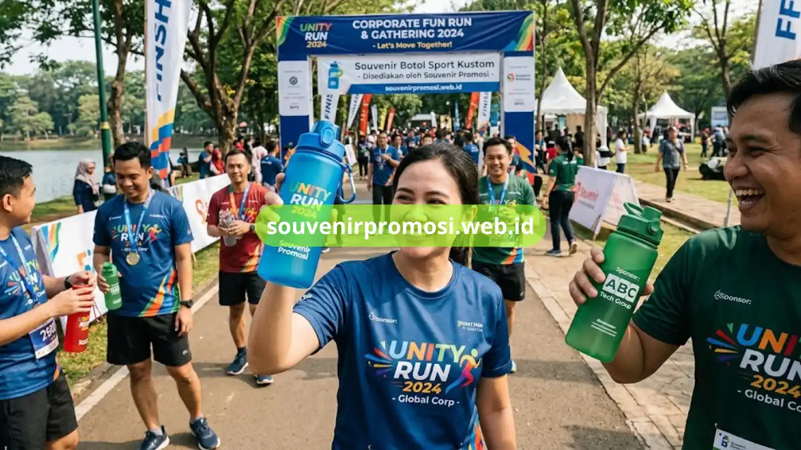

Spesifikasi Produk
Sport Bottle Custom untuk Souvenir Event Perusahaan
Sport bottle custom untuk souvenir event perusahaan: spesifikasi bahan BPA-free, desain ergonomis outdoor, teknik cetak logo, hingga pilihan kapasitas dan warna.
Baca Selengkapnya